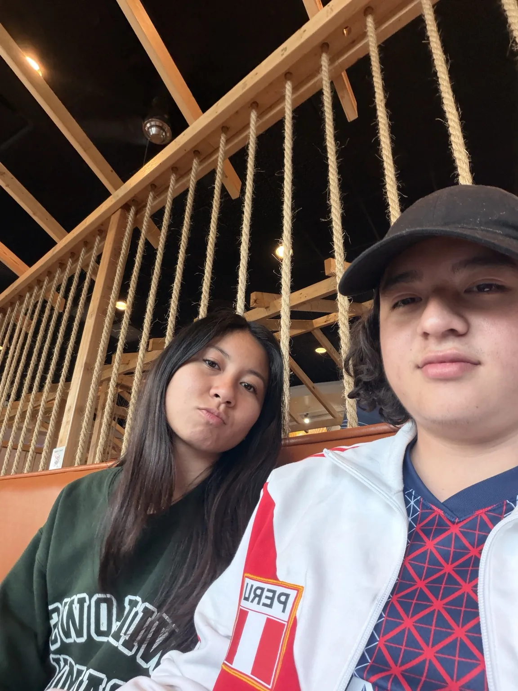
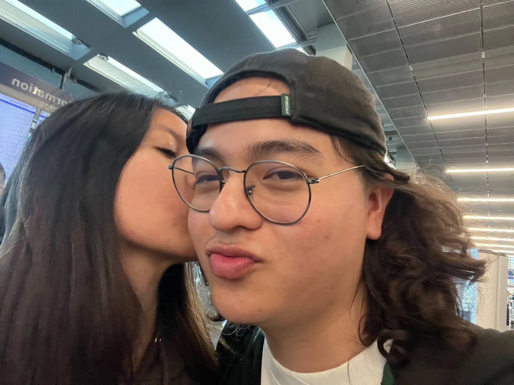
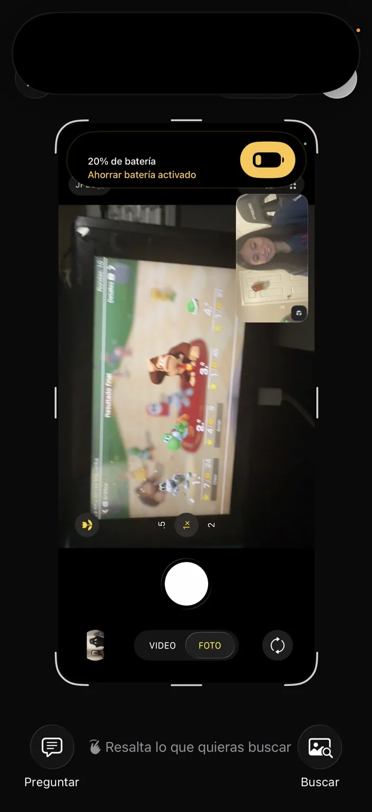
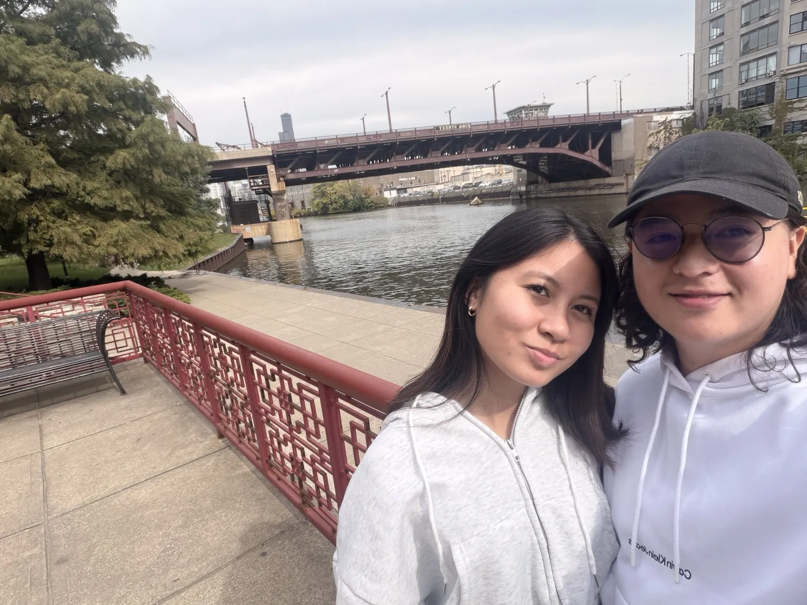
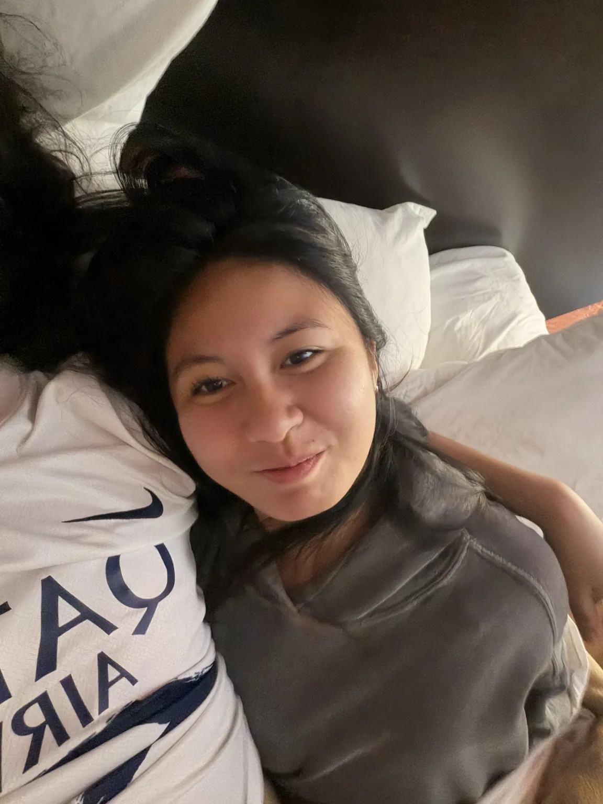

Ya cumplimos tres meses juntos y quería hacerte algo que no cupiera en un solo mensaje: un pequeño lugar lleno de nosotros, nuestras fotos, nuestras risas y lo bonito que ha sido encontrarte.
hecho especialmente para ti ♡

you & me, always ♡

one of my favorite moments♡✳3 months and counting!
DESLIZA PARA CONOCER NUESTRA HISTORIA↓
01 / OUR LITTLE STORY
Tres meses. Muchísimos momentos.
Empezó siendo una historia de dos personas. Y, sin darnos cuenta, empezamos a coleccionar pequeños mundos juntos.
03meses juntos
✦
92días desde el 19 de julio
✦
∞recuerdos por crear
01

EL COMIENZO
Primero fueron las conversaciones.
Una llamada, una risa, otra historia. A veces las cosas más bonitas empiezan de la manera más sencilla.
02

NUESTROS MOMENTOS
Después llegaron las aventuras.
Fotos por la ciudad, salidas, comida, miradas cómplices y muchas cosas que ahora queremos recordar.
03

TRES MESES · 19 OCTUBRE 2026
Y ahora… ya van tres meses.
No todo es una foto perfecta. También somos los ratitos tranquilos, las tonterías y lo cotidiano que se vuelve especial.
02 / OUR PHOTO DIARY
El museo de nosotros.
Un poquito de todo: las fotos bonitas, las improvisadas… y las que nos hacen reír. Toca cualquiera para verla más grande.
keep these forever! ↘
❧
Y sí… guardaría hasta las fotos más random, porque también son parte de nosotros.
❧
UN PEQUEÑO RECORDATORIO
De todos los lugares que hemos visto, mis favoritos son los que comparto contigo.
— Santiago ♡
03 / THE LITTLE THINGS
Hay cosas que me encantan de ti.
Seis notitas pequeñas. Tócalas para descubrir qué hay detrás. (Sí, hay que abrirlas una por una).
P. D. Todavía podría escribir mil más… ↝
04 / A LITTLE SECRET
Tres meses. Tres deseos.
Te dejé tres sobres. Abre los tres para desbloquear una sorpresa más.
0 de 3 abiertos
✧ ♡ ✧
La sorpresa eres tú, Florian.
Gracias por ser parte de mis días. Ahora sí… queda una última cosa para ti.